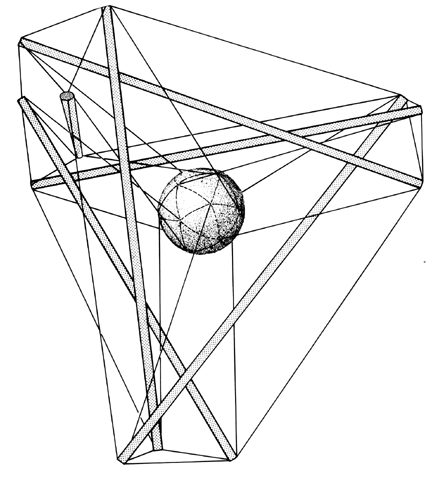

|  |
| Fig. 401.00 Tensegrity Tetrahedron with "Me" Ball Suspended at Center of Volume of the Tetrahedron: Note that the six solid compression members are the acceleration vectors trying to escape from Universe at either end, by action and reaction; whereas the ends of each would-be escapee are restrained by three tensors, one long and two short; while the ball at the center is restrained from local torque and twist by three triangulated tensors tangentially affixed from each of the four corners. |